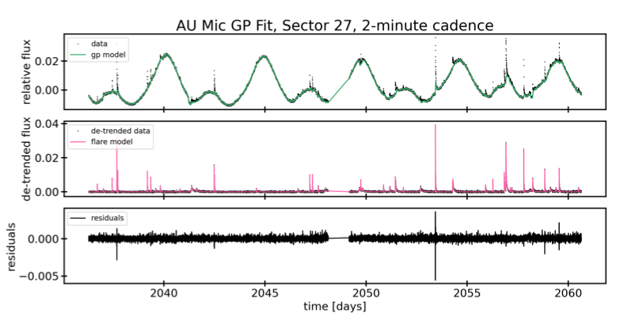
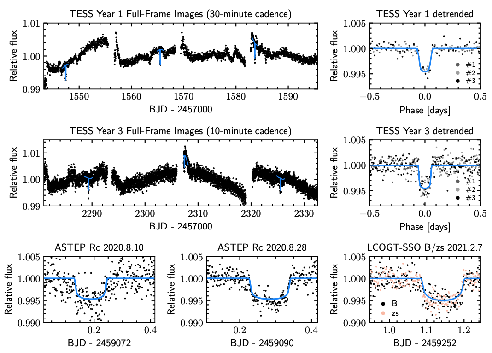
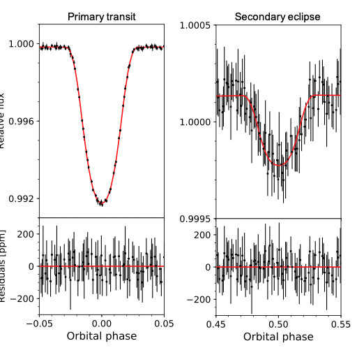

STATUS UPDATE: Orbits 1 and 2 of Sector 41 are now available to download as a TICA products from MAST
Welcome TESS followers! This week we are looking at three papers from the archive,
Flares, Rotation, and Planets of the AU Mic System from TESS Observations (Gilbert et. al., 2021) :
Taking data from both Sectors 1 and 27 of the TESS mission, the authors present a combined analysis of the AU Mic system. AU Mic is a cool red dwarf M-star which is approximately 24 million years old, and 31.9 light years away. The system contains a planet called AU Mic b, which is in a close orbit with the host.
In 2018, TESS observed AU Mic producing numerous flares and a NASA feature was written about the object. Now, combing the data from multiple sectors, the authors compare the flare rates and analyze the spot evolution, finding that the level of activity has increased slightly between sectors. The 20-second cadenced data from Sector 27 also allows for the detection of more flares, smaller flares, and better resolved flare morphology.
The parameters for AU Mic b were also refined by fitting the three additional transits detected in Sector 27 via a model that includes stellar activity. Clear transit timing variations were found in the data with an amplitude of ~80 seconds. Three transits of another planet, AU Mic c, were also detected indicating a radius of 2.8 R⊕ and a period of 18.86 days.
TOI-3362b: A Proto-Hot Jupiter Undergoing High-Eccentricity Tidal Migration (Dong et al., 2021) :
One way in which a giant planet can be placed in short-period orbit is through a process called high-eccentricity tidal migration. If this process were to occur frequently there should be several examples of proto-hot Jupiters in highly elliptical orbits going through it, however only a few such systems have been discovered.
In this paper the authors present data for TOI-3362b, a 5 MJup planet with a period of 18.1 days, orbiting a main-sequence F-type star. This planet is likely undergoing high-eccentricity tidal migration, with an orbital eccentricity of 0.815. Given that the planet has a semi-major axis of 0.153 au, the orbital period is expected to shrink to a final orbital radius of 0.051 au once tidal circularization is complete. The extreme eccentricity of the planet could be explained by interactions with other planets.
Given that the planets period is close to the period sensitivity of TESS, even a few discoveries like this one could indicate that proto-hot Jupiters may be quite common.
TOI-1518b: A Misaligned Ultra-hot Jupiter with Iron in its Atmosphere (Cabot et. al., 2021) :
In this paper the authors present the discovery of TOI-1518b, an ultra-hot Jupiter with a bright (V=8.95), fast-rotating, F0 host star (Teff ~ 7300 K). EXPRES optical transmission spectra were used to confirm the transiting planet, which is inflated with an Rp = 1.875 RJ.
The planet has a misaligned orbit of 240.34 degrees, a nearly grazing transit with b = 0.9036, and has a 1.9 day orbit around its host during which it experiences intense irradiation.
The TESS data clearly show a secondary eclipse with a depth of 364 ppm, and there is a significant phase curve signal from which a relative day-night planetary flux difference of ~320 ppm is derived, and a 5.2 sigma detection of ellipsoidal distortion on the host.
Through an atmospheric cross-correlation analysis the authors detect neutral Iron at Kp = 157 km s-1 and Vsys = -16 km s-1, which means that the planet is a highly irradiated gas-giant planet with Fe detections in transmission.

Fig. 1: Taken from Gilbert et., al., (2021). TESS Sector 27, 2-minute cadence observations of AU Mic. The top panel shows our GP spot model, the middle shows the authors flare model, and the bottom shows the residuals.

Fig. 2: Taken from Dong et., al., (2021). TESS and ground-based transit photometry of TOI-3362b over-plotted with best modeled light curves. Both raw (upper and middle left panels) and folded-detrended (upper and middle right panels) TESS Year 1 (30-minute cadence) and Year 3 (10-minute cadence) light curves are presented. Three detrended, ground-based light curves observed with ASTEP and LCOGT-SSO are presented. The LCOGT-SSO transit was detected in two different filters (B and zs) with no obvious transit depth variation detected.

Fig. 3: Taken from Cabot et., al., (2021). Zoomed-in views of the primary transit (left) and secondary eclipse (right) of TOI-1518b. The light curves are binned in 3-minute intervals. Note the difference in vertical scale between the two plots. The difference in out-of- occultation baselines primarily reflects the planetary phase- curve modulation. The bottom panels show the correspond- ing residuals from the best-fit model